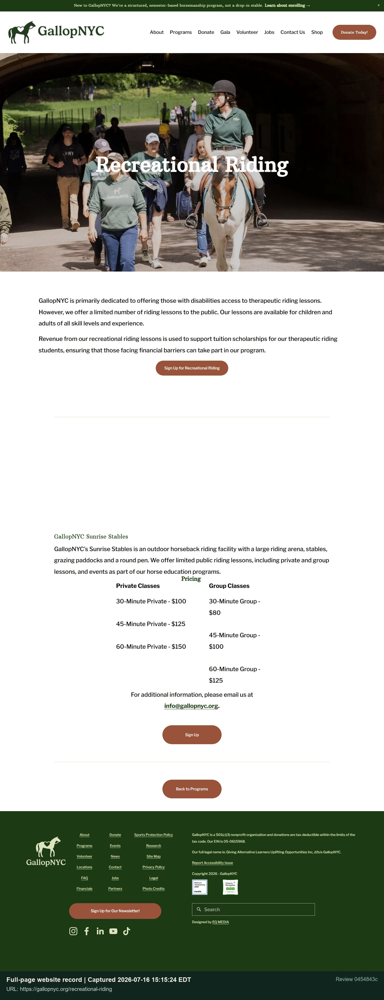
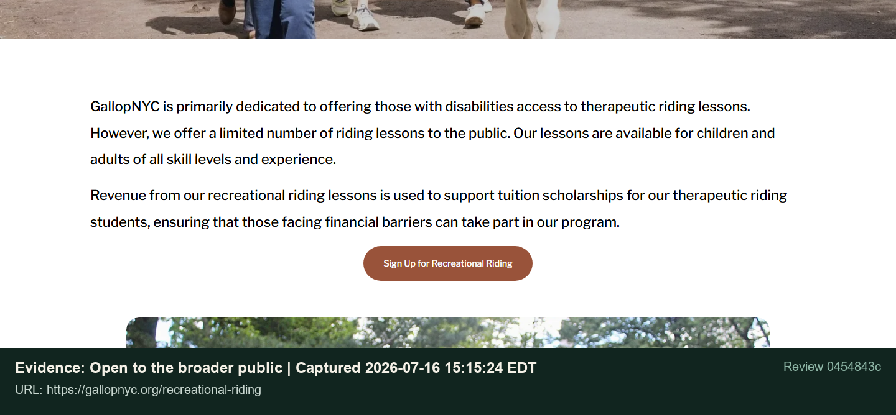
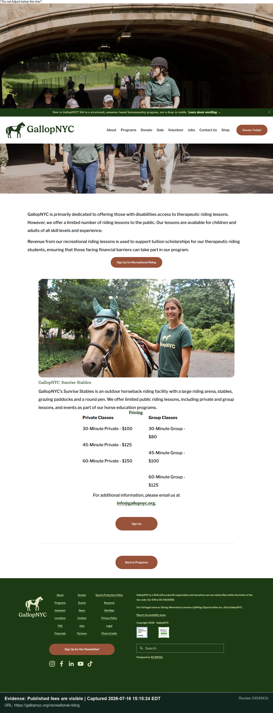
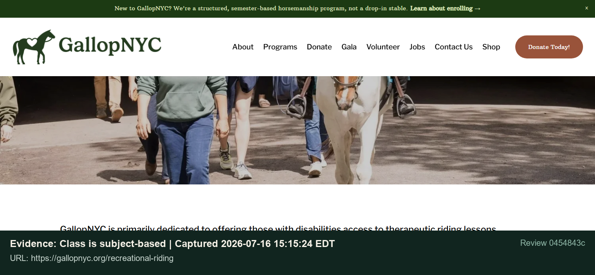

Website verification record
Recreational Group Riding
Review 0454843c - 2026-07-16
Human decision required. This report gathers public evidence and does not approve or deny the request.
Participant
Aaron M.Provider
GallopNYCCategory
Community ClassApplication price
$80 per 30-minute sessionReview date
2026-07-16 19:15:00 UTCRate comparison
Application amount: $80.00. Evidence found
Checklist findings
| Criterion | Status | Reviewer note | Evidence |
|---|---|---|---|
Open to the broader publicwe offer a limited number of riding lessons to the public. | Found | Evidence found | Source page EV-FULL-01 EV-002 |
Published fees are visible30-Minute Group - $80 | Found | Evidence found | Source page EV-FULL-01 EV-003 |
| No separate OPWDD pricing | Needs Review | The cited public text does not explicitly prove this negative criterion, so it requires manual review. | - - |
Class is subject-basedstructured, semester-based horsemanship program | Found | Evidence found | Source page EV-FULL-01 EV-004 |
| Class does not award college credit | Needs Review | Insufficient evidence | - - |
| Class is not clinical or therapy | Needs Review | The cited public text does not explicitly prove this negative criterion, so it requires manual review. | - - |
| Published schedule exists | Needs Review | Insufficient evidence | - - |
Published fee matches the application30-Minute Group - $80 | Found | Evidence found | Source page EV-FULL-01 EV-005 |
| Category is approved in the participant budget | Internal | Internal information is required; this cannot be verified from a public website. | - - |
| Request aligns with the Life Plan | Internal | Internal information is required; this cannot be verified from a public website. | - - |
| Request does not duplicate another funded service | Internal | Internal information is required; this cannot be verified from a public website. | - - |
| Session frequency is within invoice guidance | Internal | Internal information is required; this cannot be verified from a public website. | - - |
{kind=link}
{kind=link}
{kind=link}
{kind=link}
{kind=link}
Reviewer notes
- No reviewer notes.
Evidence captures



